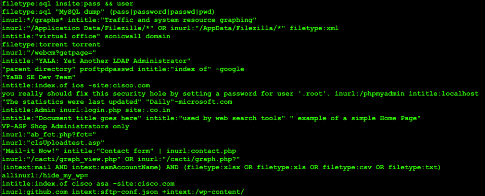

|| NIGHT OWL CONSULTING || Download GHDB dorks with Perl, author: xor-function || 05/10/2015 || Back to main
The Perl script is a web scraper that extracts all the links from webpages that summarize a dork search term. So to get all off the Dorks listed for a specific category just specify the links to each page number. For it to work you may need to install some Perl modules that are not available from aptitude so use Cpanmius since it's as simple as apt in use. If you just un-comment one of the URLs you will only receive the most recently archived Google dorks for that category. To get everything from a specific category you need to understand the link structure. Each category page has a query at the of the specific category "?pg=1" meaning page one. The query being "?pg" and the value is the page number "=1..2..3" etc You can enter the URLs manually or change the code logic to store URLs in an array and for loop through each page number to extract all the dorks from a specific category. The code is up on github.com https://github.com/xor-function/ghdb-ws clone it with git git clone https://github.com/xor-function/ghdb-ws.git  The resulting output from the code. The cool thing about this code is that it can serve as a base for creating a web crawler that is not limited to just being used on this one site. The clues to this are in the comments found in the source.